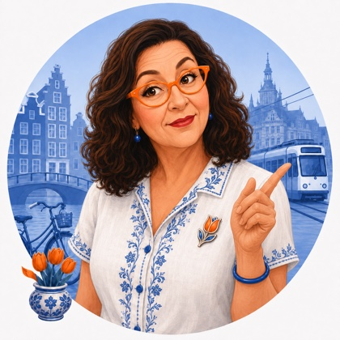
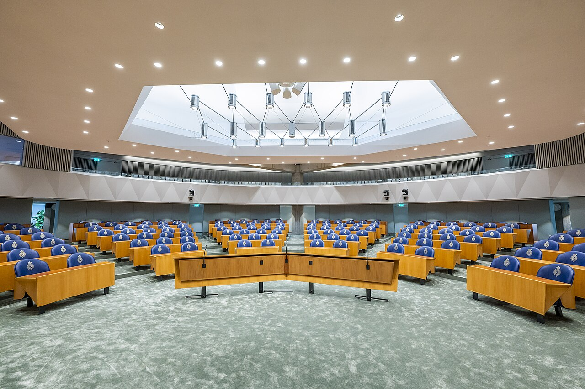
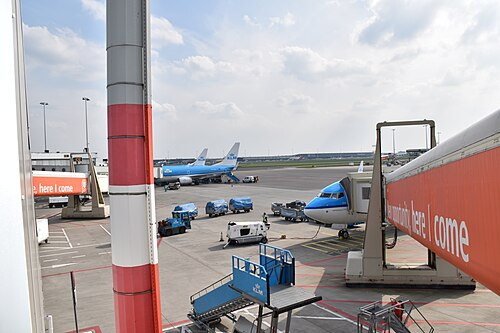
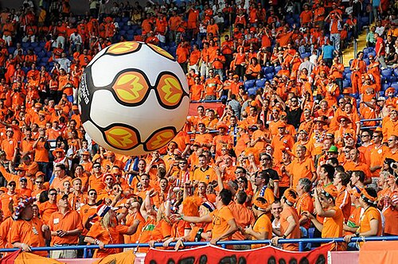
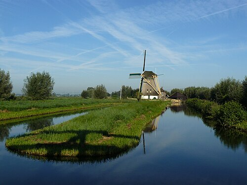
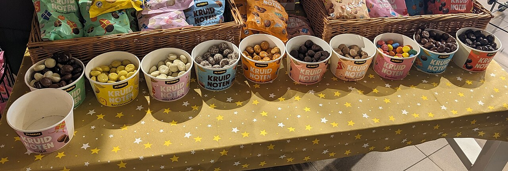
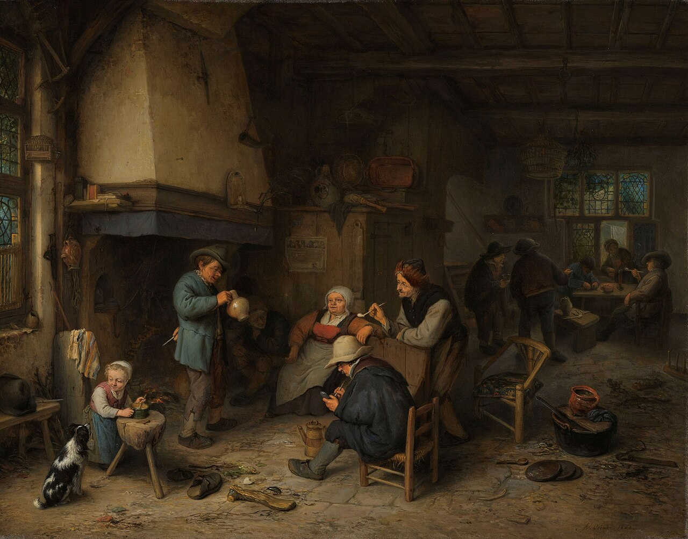
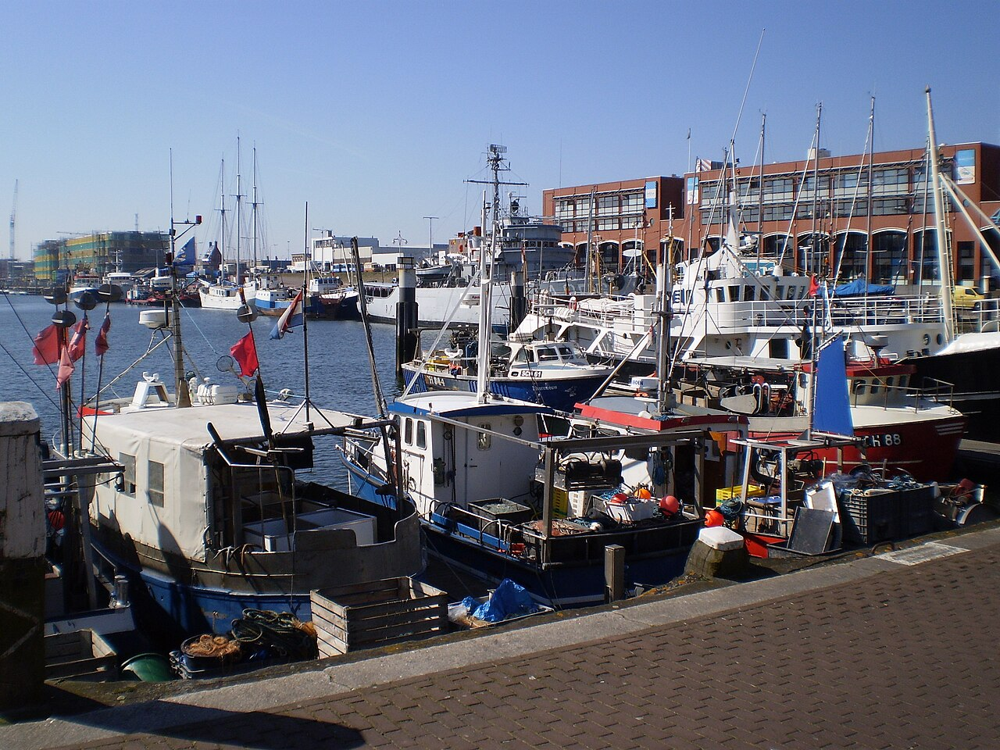
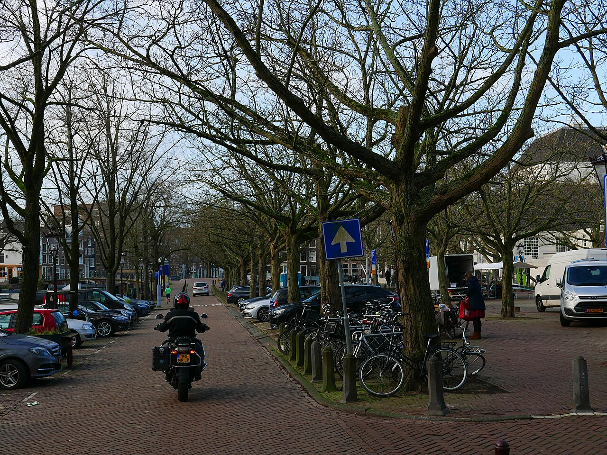

A letter from Tulp de Gid 🌷
Lieve Geltovas, this was a week where the grown ups in The Hague nearly ruined everyone's November and then thought better of it, and the whole country spent four days feeling very good and then very bad about a football team. Sinterklaas, at least, showed up exactly on schedule and did not change his mind about anything. Put the kettle on, my dears, and let me walk you through it.
 The big story
The big story
The government that nearly fell over a backdoor deal decides to stay together
On the 12th of November, the Tweede Kamer narrowly passed the 2027 tax plan, 76 votes to 74, only because two of the three coalition parties, D66 and CDA, had quietly struck a side deal with opposition parties Pro and Volt to shift roughly a billion euros of tax burden from labor onto wealth. The third coalition partner, the VVD, found out about its own government's deal late enough to feel blindsided, and voted against it. A no confidence motion followed and failed, 116 to 34, but it took a tense weekend of closed door talks before all three parties said trust had been restored and agreed, on Monday, to keep governing together under new ground rules.
None of this is settled yet. The tax plan still needs the Eerste Kamer in December, where the coalition does not have a majority either, so there is a real chance it gets rewritten again before you ever pay a cent of it. What is already clear is what kind of government you are moving under: one that can pass its own budget only by cutting deals its own partners do not see coming.
 A few quick things, told quickly
A few quick things, told quickly
Something was scrambling the sky over your future airport
On the 9th of November, GPS signals on at least seven flights approaching Schiphol dropped out as part of a wider jamming event that briefly affected roughly eighty aircraft over the Netherlands, Belgium, and nearby corners of England and Germany. Every plane landed safely after crews switched to a radio based backup system, air traffic control said, and investigators traced the likely source to a patch of the North Sea north of Texel, where several Russian flagged ships happened to be at the time, though nobody has proven they caused it.

Oranje's best week and worst week happened four days apart
On Friday the 13th, the Dutch national team beat Greece 7-0 at home, its biggest ever win over that opponent, with a hattrick from Tijjani Reijnders. Four days later, in Berlin, Germany beat them 5-0, the Dutch team's heaviest defeat since 1959. The scoreline hurt less than it sounds: results elsewhere meant Oranje had already done enough to reach the Nations League quarterfinals either way.

A 217 year old windmill just got a very modern paint job, for one week only
From the 16th to the 21st of November, Molen De Onrust, an 1809 windmill that still actively manages the water level at the Naardermeer, the country's very first protected nature reserve, is lit blue after dark, one of several Dutch landmarks marking UNESCO's 80th anniversary. Its miller says the mill is "much more than a pretty icon in the landscape," since it is still quietly doing the exact job it was built for, two centuries on.
 Dish of the week
Dish of the week
The tiny cookie that is somehow a whole season by itself
Kruidnoten are small, hard, spice laced cookies, cinnamon and nutmeg and a little white pepper baked into a dense, crumbly bite about the size of a large marble, and from now until the 5th of December they turn up in every Dutch supermarket by the bucketful, scooped loose into paper cups the way popcorn is sold at a cinema. Most households keep an open bag on the counter for the rest of the season, so a "quick snack" between now and Sinterklaas usually means a small handful of these rather than anything from the fridge.
🌷 Tulp's Dutch Calendar Radar
Two dates worth circling before my next letter reaches you
This Friday, the 20th, is the Dag van de Rechten van het Kind, the Dutch marking of the UN Convention on the Rights of the Child. It is not a day off school or work, but schools and city halls here do take a moment for it, which feels worth mentioning with a two year old of your own about to grow up in this country.
And now that Sinterklaas is properly in the country (more on that below), the whole machine behind him starts counting down toward Pakjesavond, the night of presents, which falls on the 5th of December, a little under three weeks away.

A tavern scene so lived in you can practically smell the pipe smoke
Painted on a small copper panel in 1661, this crowded inn interior is Adriaen van Ostade at his most purely observational: men drinking and smoking around an open hearth, a girl feeding scraps to a dog in the foreground, and a second, looser group of peasants gathered at a table further back, every face doing something slightly different from the one beside it.
Van Ostade spent essentially his whole career in Haarlem painting exactly this kind of scene, ordinary Dutch people doing nothing remarkable, and made the genre respectable enough that a wealthy Amsterdammer left this very painting to the city when he died in 1854, rather than to his own family.
 The Hague & Scheveningen dispatch
The Hague & Scheveningen dispatch
The harbor that exists because of a storm, and a saint who arrives by boat
The Tweede Haven, Scheveningen's "second harbor," exists because a storm in 1894 wrecked much of the original fishing fleet right there on the beach. The fix took decades; Queen Wilhelmina herself came to open the finished basin in 1931. These days the working fishing boats mostly stay in the First Harbor, and the Tweede Haven has settled into a quieter life of sailboats, a marina, and restaurants along its quay, exactly the harbor Alec and Irena would stroll Amellia past on an ordinary afternoon.
It is also where Sinterklaas himself arrived this year: on Saturday the 14th, Pakjesboot 070 sailed into the Tweede Haven, with the mayor of The Hague and the Spanish ambassador both on the quay to greet him, before a procession carried him on toward the city center. It was the small, hyperlocal, Hague specific version of the same day's national arrival in Grave, free to attend, and the kind of small civic tradition your family now simply lives next door to.
"Heb je al een verrassing bedacht?" (Have you already thought of a surprise?)
"Die verrassing was echt heel knap gemaakt." (That surprise was really cleverly made.)
On the family calendarAnd a glance, before I let you go, at what this little family of ours is up to.
🌷 Tulp's question for the table
Every family ends up with at least one tradition that changed over the years without anyone ever sitting down and deciding it should. What is one of ours, and does anyone remember how it used to be before?
That is the letter, my dears. A government that nearly broke itself over a backdoor deal and then chose to stay together anyway, a mystery somewhere off Texel scrambling the sky over your future airport, a football team that looked like the best in Europe and then, four days later, suffered its worst defeat in 67 years, and a 217 year old windmill wearing blue lights for a week over an anniversary that has nothing to do with it.
Enjoy your call this Thursday, 18:30 here, 12:30 in Atlanta, 09:30 in Portland, the same nine hour gap as last week.
Tot snel, which just means see you soon. Liefs, Tulp.

And here is where I will leave you: bare branches over a quiet Amsterdam square, the kind of calm, low light this country specializes in from now until spring. A Dutch November earns its reputation for gray, but there is something almost restful about a street this undressed.